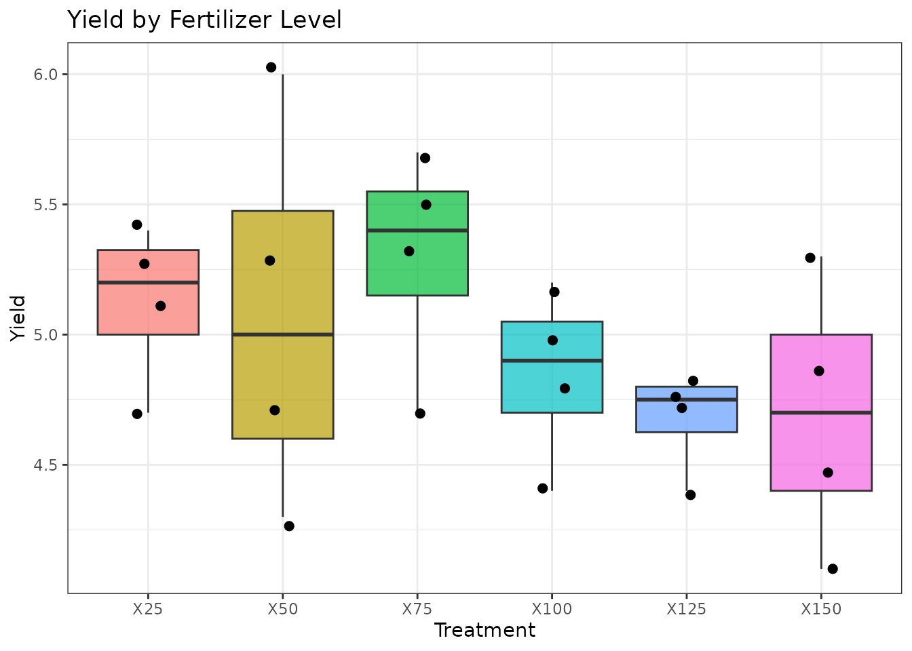
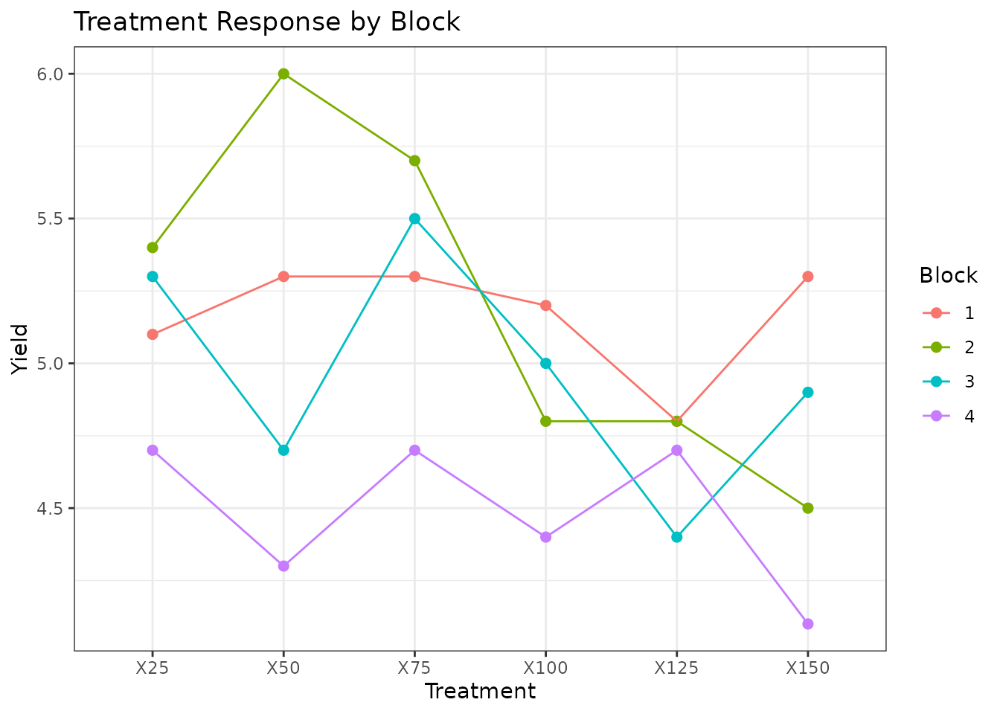
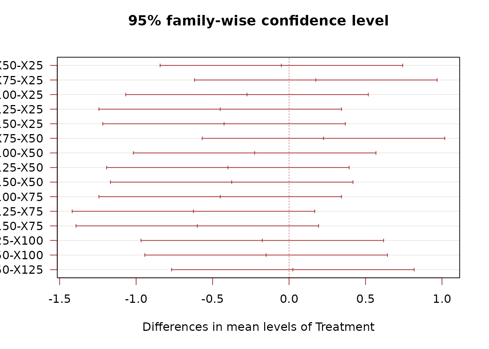
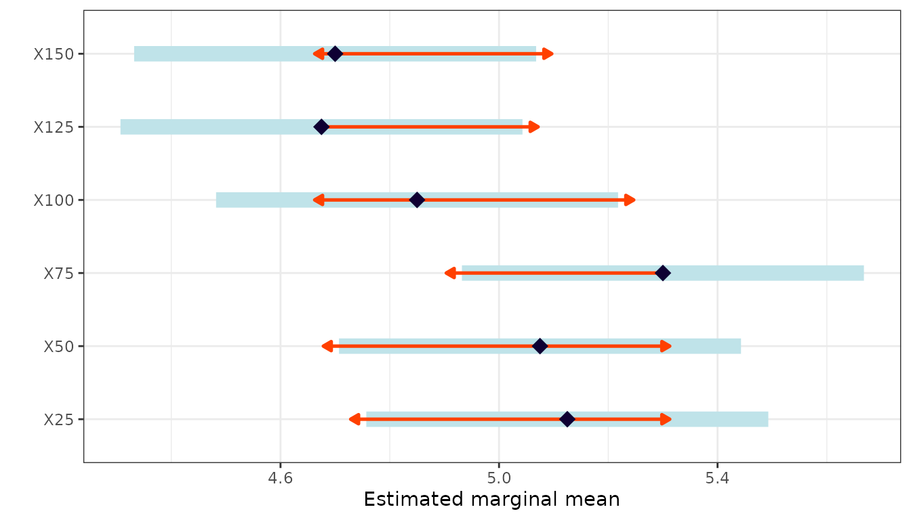

When to Use
The Randomized Complete Block Design (RCBD) is used when:
- There is one treatment factor of interest.
- There is a known source of variability (e.g., soil gradient, time, lab bench) that can be controlled by grouping units into blocks.
- Each block contains all treatments exactly once.
RCBD reduces experimental error by accounting for block-to-block variability, making it more efficient than a CRD when conditions are not uniform.
The Design
The statistical model is:
where is the effect of block and is the treatment effect. Block effects are included to absorb known variability, but we are primarily interested in testing treatment differences.
Data
We use a dataset with six fertilizer levels (X25 through X150) applied across four blocks.
library(agrideshr)
data(rcbd_data)
str(rcbd_data)
#> Classes 'tbl_df', 'tbl' and 'data.frame': 24 obs. of 3 variables:
#> $ Block : Factor w/ 4 levels "1","2","3","4": 1 1 1 1 1 1 2 2 2 2 ...
#> $ Treatment: Factor w/ 6 levels "X25","X50","X75",..: 1 2 3 4 5 6 1 2 3 4 ...
#> $ Yield : num 5.1 5.3 5.3 5.2 4.8 5.3 5.4 6 5.7 4.8 ...
head(rcbd_data, 12)
#> Block Treatment Yield
#> 1 1 X25 5.1
#> 2 1 X50 5.3
#> 3 1 X75 5.3
#> 4 1 X100 5.2
#> 5 1 X125 4.8
#> 6 1 X150 5.3
#> 7 2 X25 5.4
#> 8 2 X50 6.0
#> 9 2 X75 5.7
#> 10 2 X100 4.8
#> 11 2 X125 4.8
#> 12 2 X150 4.5Exploratory Visualization
library(ggplot2)
ggplot(rcbd_data, aes(x = Treatment, y = Yield, fill = Treatment)) +
geom_boxplot(alpha = 0.7) +
geom_jitter(width = 0.1, size = 2) +
theme_bw() +
labs(title = "Yield by Fertilizer Level", y = "Yield") +
theme(legend.position = "none")
Treatment response by block:
ggplot(rcbd_data, aes(x = Treatment, y = Yield, colour = Block, group = Block)) +
geom_point(size = 2) +
stat_summary(fun = mean, geom = "line") +
theme_bw() +
labs(title = "Treatment Response by Block")
Model Fitting
In RCBD, the block is included as a factor in the model but is not the focus of inference:
mod <- aov(Yield ~ Block + Treatment, data = rcbd_data)
summary(mod)
#> Df Sum Sq Mean Sq F value Pr(>F)
#> Block 3 1.965 0.6549 5.494 0.00949 **
#> Treatment 5 1.267 0.2534 2.126 0.11837
#> Residuals 15 1.788 0.1192
#> ---
#> Signif. codes: 0 '***' 0.001 '**' 0.01 '*' 0.05 '.' 0.1 ' ' 1The F-test for Treatment tells us whether fertilizer
levels differ after accounting for block effects.
Post-hoc Comparisons
We compare treatments (not blocks) using Tukey’s HSD:
TukeyHSD(mod, which = "Treatment")
#> Tukey multiple comparisons of means
#> 95% family-wise confidence level
#>
#> Fit: aov(formula = Yield ~ Block + Treatment, data = rcbd_data)
#>
#> $Treatment
#> diff lwr upr p adj
#> X50-X25 -0.050 -0.8431557 0.7431557 0.9999384
#> X75-X25 0.175 -0.6181557 0.9681557 0.9768219
#> X100-X25 -0.275 -1.0681557 0.5181557 0.8629753
#> X125-X25 -0.450 -1.2431557 0.3431557 0.4697141
#> X150-X25 -0.425 -1.2181557 0.3681557 0.5279646
#> X75-X50 0.225 -0.5681557 1.0181557 0.9347621
#> X100-X50 -0.225 -1.0181557 0.5681557 0.9347621
#> X125-X50 -0.400 -1.1931557 0.3931557 0.5879468
#> X150-X50 -0.375 -1.1681557 0.4181557 0.6483439
#> X100-X75 -0.450 -1.2431557 0.3431557 0.4697141
#> X125-X75 -0.625 -1.4181557 0.1681557 0.1678730
#> X150-X75 -0.600 -1.3931557 0.1931557 0.1980689
#> X125-X100 -0.175 -0.9681557 0.6181557 0.9768219
#> X150-X100 -0.150 -0.9431557 0.6431557 0.9882241
#> X150-X125 0.025 -0.7681557 0.8181557 0.9999980
Estimated Marginal Means
library(emmeans)
emm <- emmeans(mod, specs = "Treatment")
emm
#> Treatment emmean SE df lower.CL upper.CL
#> X25 5.12 0.173 15 4.76 5.49
#> X50 5.08 0.173 15 4.71 5.44
#> X75 5.30 0.173 15 4.93 5.67
#> X100 4.85 0.173 15 4.48 5.22
#> X125 4.67 0.173 15 4.31 5.04
#> X150 4.70 0.173 15 4.33 5.07
#>
#> Results are averaged over the levels of: Block
#> Confidence level used: 0.95
pairs(emm)
#> contrast estimate SE df t.ratio p.value
#> X25 - X50 0.050 0.244 15 0.205 0.9999
#> X25 - X75 -0.175 0.244 15 -0.717 0.9768
#> X25 - X100 0.275 0.244 15 1.126 0.8630
#> X25 - X125 0.450 0.244 15 1.843 0.4697
#> X25 - X150 0.425 0.244 15 1.741 0.5280
#> X50 - X75 -0.225 0.244 15 -0.922 0.9348
#> X50 - X100 0.225 0.244 15 0.922 0.9348
#> X50 - X125 0.400 0.244 15 1.639 0.5879
#> X50 - X150 0.375 0.244 15 1.536 0.6483
#> X75 - X100 0.450 0.244 15 1.843 0.4697
#> X75 - X125 0.625 0.244 15 2.560 0.1679
#> X75 - X150 0.600 0.244 15 2.458 0.1981
#> X100 - X125 0.175 0.244 15 0.717 0.9768
#> X100 - X150 0.150 0.244 15 0.614 0.9882
#> X125 - X150 -0.025 0.244 15 -0.102 1.0000
#>
#> Results are averaged over the levels of: Block
#> P value adjustment: tukey method for comparing a family of 6 estimates
Conclusion
The RCBD is the workhorse of agricultural experimentation. By blocking on a known source of variability, it provides a more precise estimate of treatment effects than a CRD. Key outputs:
- ANOVA table with block and treatment effects separated.
- Tukey HSD for pairwise treatment comparisons.
- EMM interaction plots to check consistency across blocks.
When there are two sources of heterogeneity (e.g., rows and columns), consider a Latin Square Design.